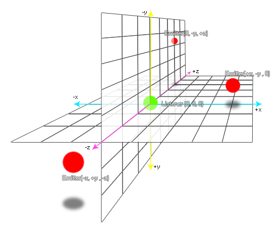

audio_emitter_position(emitter, x, y, z);
| Argument | Description |
|---|---|
| emitter | The index of the emitter to change. |
| x | The x position relative to the listener (default 0). |
| y | The y position relative to the listener (default 0). |
| z | The z position relative to the listener (default 0). |
Returns : N/A
With this function you can change the position of an audio emitter within the 3D audio space. The position will affect the sound in different ways depending on where the listener is positioned within the
audio space too (default position is (0, 0, 0). See audio_listener_position for more information), so for example if the emitter position is set to (100, 0, 0) and
the current listener is at (200, 0, 0) the audio streamed from the emitter will appear to be on the left of the audio field. The image below shows a visual representation of emitters and their relative positions to
the listener:

if speed > 0
{
audio_emitter_position(s_emit, x, y, 0);
}
The above code checks to see if the instance speed is over 0 and if it is it updates the audio emitter indexed in the variable "s_emit" to the current x/y position.